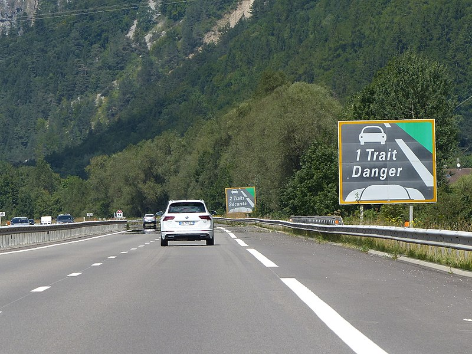
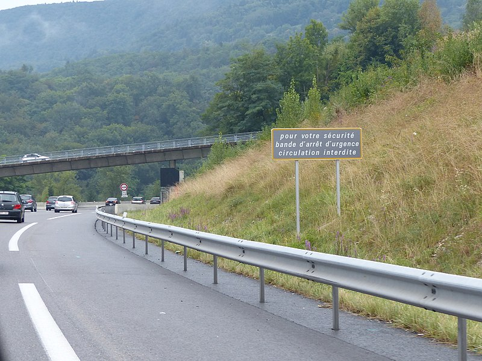

Association de Prévention des Dangers et Sécurité de la Route.
Les Panneaux de Sécurité
Les signaux d'information de sécurité routière de type SR sont placés sur les voies pour rappeler aux usagers des règles simples de sécurité routière.
Les signaux de type SR sont de forme rectangulaire, à fond gris, listel jaune et inscriptions blanches.
Trois signaux SR2 existent, il s’agit d’un ensemble de signaux utilisés successivement, rappelant l’espacement que les usagers doivent laisser entre leurs véhicules sur autoroute et sur route à deux fois deux voies et carrefours dénivelés, dont le marquage de rive est de type T4. Le premier panneau est intitulé « Vérifiez votre distance de sécurité », le deuxième « 1 trait : danger » et le troisième « 2 traits : sécurité » Signaux SR3 : annonce une zone où la vitesse est contrôlée par un ou des radars automatiques.
La signalisation d’une zone où la vitesse est contrôlée par des radars automatiques peut être assurée à l’aide d'un panneau SR3a ou SR3b. Elle est obligatoirement accompagnée d’un rappel de la vitesse limite autorisée. L’arrêté du 12 mai 2011 a supprimé ces panneaux, cependant ils ont été réintroduits par l'arrêté du 4 mars 2013.
Il existe trois dimensions pour le signal SR3Signal SR4 : annonce que la zone rencontrée est sous vidéosurveillance par le gestionnaire de la route, pour assurer une meilleure sécurité des usagers et la régulation du trafic, conformément à l’article 10 de la loi no 95-73 du 21 janvier 1995 d’orientation et de programmation relative à la sécuritéLa signalisation de rappel d’un message de sécurité routière de portée générale est facultative. Lorsqu’elle est jugée utile elle est effectuée au moyen du panneau SR50. Ce panneau comporte une mention courte commençant par les mots « pour votre sécurité » et rappelant une règle majeure déjà définie par le code de la route. Son emploi doit rester exceptionnel.